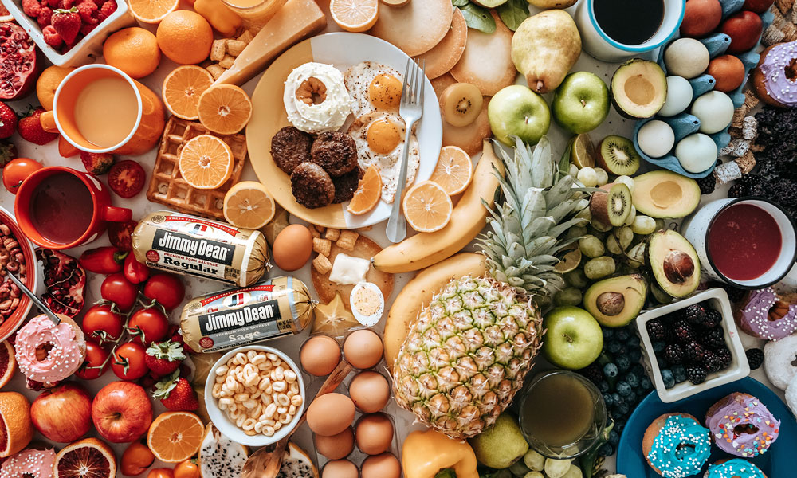

Big jobs usually go to the men who prove their ability to autgrow small ones
작은 일에서 성장할 수 있는 사람에게 큰 일이 주어진다.
Big jobs usually go to the men who prove their ability to autgrow small ones
작은 일에서 성장할 수 있는 사람에게 큰 일이 주어진다.
마우스 이펙트 - 방향에 따라 움직이기
<main>
<div class="cursor"></div>
<div class="moveWrap">
<article class="moveImg">
<div class="mImg"><img src="../assets/img/bg9.jpg" alt="이미지"></div>
<div class="mText">
<p>Big jobs usually go to the men who prove their ability to autgrow small ones</p>
<p>작은 일에서 성장할 수 있는 사람에게 큰 일이 주어진다.</p>
</div>
</article>
</div>
</main>
body {
width: 100%;
height: 100vh;
overflow: hidden;
cursor: none;
}
.moveImg {
position: absolute;
left: 50%; top: 50%;
transform: translate(-50%, -50%) perspective(600px) rotateX(0deg) rotateY(0deg);
transform-style: preserve-3d;
will-change: transform;
transition: all .2s;
}
.moveImg .mImg {
width: 50vw;
position: relative;
}
.moveImg .mImg::before {
content: '';
position: absolute;
left: 5%; bottom: -3%;
width: 90%; height: 40px;
background: url(../assets/img/bg9.jpg);
background-size: 100% 30px;
filter: blur(15px);
z-index: -1;
opacity: 0.9;
}
.moveImg .mImg img {
width: 100%;
border-radius: 5px;
}
.moveImg .mText {
font-family: 'NEXONLv1Gothic';
position: absolute;
left: 50%; top: 50%;
transform: translate3d(-50%, -50%, 150px);
text-align: center;
color: #fff;
background: rgba(0, 0, 0, .3);
padding: 2vw;
font-size: 1vw;
line-height: 1.6;
white-space: nowrap;
border-radius: 5px;
}
.cursor {
position: absolute;
width: 10px; height: 10px;
background: #fff;
border-radius: 50%;
z-index: 10000;
user-select: none;
pointer-events: none;
}
function mouseMove(e){
let pageX = 0,
pageY = 0,
standardX = 0,
standardY = 0,
maxX = 0,
maxY = 0,
angleX = 0,
angleY = 0,
softX = 0,
softY = 0;
//마우스 값
pageX = e.pageX;
pageY = e.pageY;
//기준점 가운데로 변경
standardX = window.innerWidth/2 - pageX;
standardY = window.innerHeight/2 - pageY;
//최솟값 -100 최댓값 100 설정
maxX = Math.max(-100, Math.min(100, standardX));
maxY = Math.max(-100, Math.min(100, standardY));
//각도를 줄이는 설정
angleX = maxX * 0.12;
angleY = maxY * 0.12;
//부드럽게 설정
softX += (angleX - softX) * 1;
softY += (angleY - softY) * 1;
//이미지 움직이기
const move = document.querySelector(".moveImg");
move.style.transform = "translate(-50%, -50%) perspective(600px) rotateX("+ softY+"deg) rotateY("+-softX+"deg)";
//커서
gsap.to(".cursor", {duration: .3, left: pageX, top: pageY});
//출력
document.querySelector(".pageX").textContent = pageX;
document.querySelector(".pageY").textContent = pageY;
document.querySelector(".standardX").textContent = standardX;
document.querySelector(".standardY").textContent = standardY;
document.querySelector(".maxX").textContent = maxX;
document.querySelector(".maxY").textContent = maxY;
document.querySelector(".angleX").textContent = parseInt(angleX);
document.querySelector(".angleY").textContent = parseInt(angleY);
}
document.addEventListener("mousemove",mouseMove);